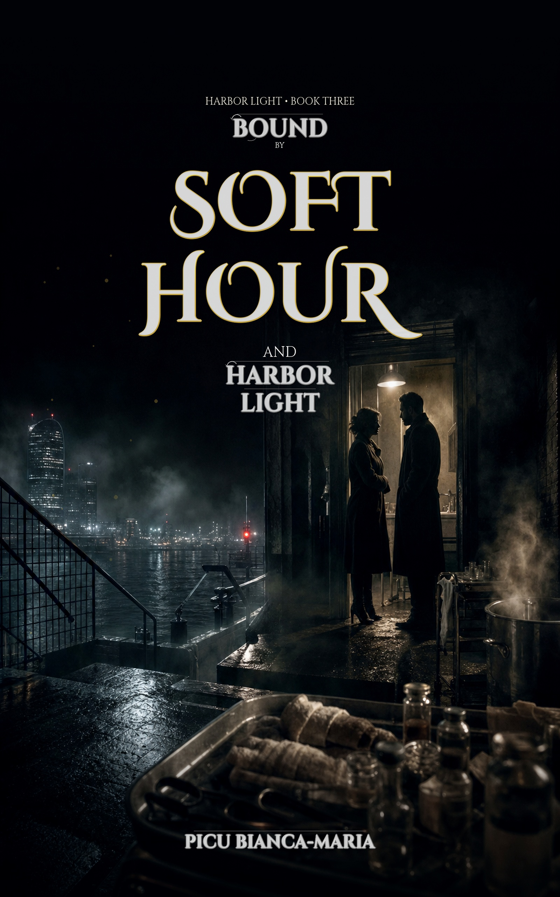
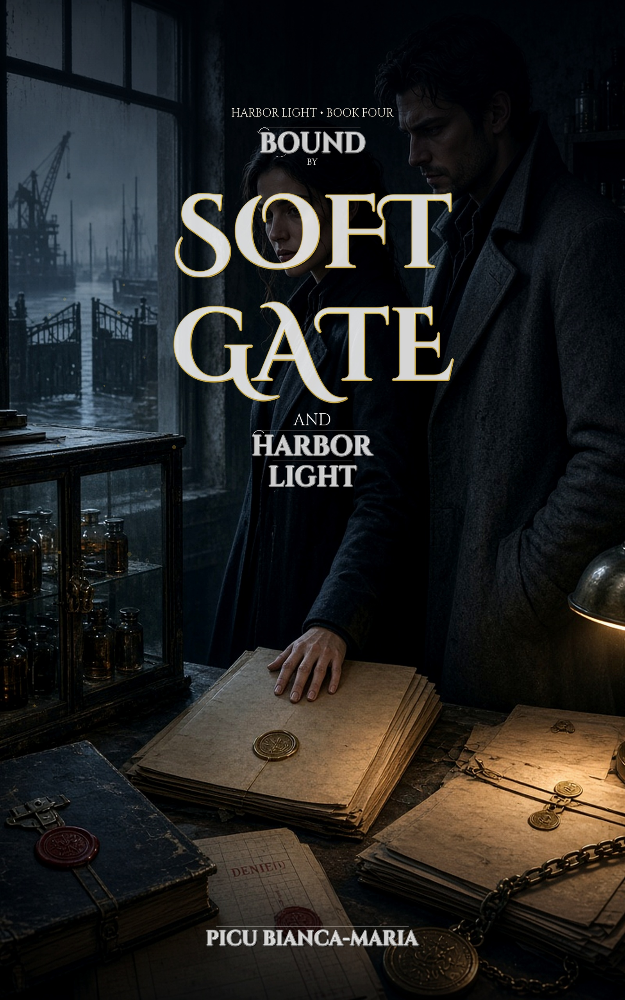

Genre guide · Soft Hour studio
Power, protocol & Soft Hour: your guide to mafia romance audiobooks
Picture this: rain on the berths, Soft Hour clinic light under empire glass, and a contract that was never a question. You are not browsing a tourist menu. You are in Harbor Light — where loyalty is currency and Julian Kane does not negotiate the dawn.
That intensity belongs in fiction. Mafia romance lets love and danger collide on the page (and in headphones) while you stay safe in your own life.
What is mafia romance?
Mafia romance is romance set inside organized-crime power: family, loyalty, leverage, and desire under rules that are not civil-court soft. The underworld is the stage; the HEA still has to cost something.
What makes mafia romance audiobooks hit harder
- Power dynamics you can hear — protocol, territory, and who holds the door.
- Loyalty and family as plot engines, not wallpaper.
- Common tropes: arranged marriage / pact, enemies-to-lovers tension, forbidden devotion, morally grey MMC.
- Darker heat and stakes — escapism into being wanted by someone dangerous, without living it.
- Audio adds score and SFX so the harbor and the hold land in the body, not only on the page.
Harbor Light tropes in play:
- Dark mafia romance
- Slow burn
- Morally grey MMC (Julian Kane)
- Arranged marriage pact
- Romantic suspense
- Cinematic audiobook (SFX + music)
- Dual-lead tension (Elena Voss / Julian Kane)
Where Harbor Soft Hour sits
Harbor Light is adult dark mafia romance by Picu Bianca-Maria: Elena Voss (dark eyes) and Julian Kane (steel eyes, Shadow Hand). Soft Hour clinic ritual under empire protocol — not Sicilian tourist fantasy, not vampire coven tour. Book 1 cinematic audio is 24 chapters with score + SFX on Gumroad; free Spotify samples first; Kindle for the novel.
Content note: adult intimacy, mafia leverage, captivity-adjacent tension, and violence under protocol. Not sweet contemporary. Not for listeners who want fade-to-black cozy.
Start with Book 1 — Bound by Blood and Harbor Light — then continue the Kindle series. Cinematic Gumroad audio is live for Book 1 languages; later books ship Kindle-first where listed.
Reading & listen order
Harbor Soft Hour path: Play sample on Spotify → full cinematic on Gumroad → novel on Kindle. Start at Book 1. Later books are Kindle-first until cinematic packs ship.
-
1 · Start — Book 1
Spotify sample · Gumroad cinematic Soft Hour · Kindle
Bound by Blood and Harbor Light — arranged pact, Elena & Julian.
-
2 · Then — Book 2
Kindle (audio TBD)
Quiet List / ledger pressure. Read after Book 1.
-
3 · Then — Book 3
Kindle EN
Soft Hour clinic under empire. Established bond.
-
4 · Finish — Book 4
Kindle EN
Soft Gate · Holding siege · HEA that still costs.
Harbor Soft Hour listen path
Cinematic Soft Hour (SFX + score) — three platforms, one series. Sample free, unlock cinematic, then read. Not an Audible-credit magazine.
-
1 · Listen free
Spotify
Trailer + chapter podcast episodes where live (EN/DE/FR/ES/IT). Sample voice, score, and SFX before you spend anything.
Open Spotify show
-
2 · Unlock full Soft Hour
Gumroad
Complete 24-chapter Cinematic Soft Hour pack — audio-only, SFX + score. Not an ebook. Not Kindle TTS. Offline files after purchase.
Buy Soft Hour audiobook
-
3 · Read the novel
Amazon Kindle
Ebook on amazon.com (KU where enrolled). Same story, page format — including for readers who sampled audio first.
Open Kindle edition
Full audiobook guide — formats, heat scale, how we make the audio →
Official Harbor Light recommendations
Publisher blogs recommend their imprint list. This studio recommends its own series — not a multi-author crème list.

Book 1 · start here
Bound by Blood and Harbor Light
Written by Picu Bianca-Maria · Cinematic Soft Hour (SFX + score) (24 chapters)
THE PATRIARCH DOESN'T ASK. HE DRAWS THE CONTRACT. Elena Voss has counted every lock in the warded room and every clause in the marriage pact the Obsidian Coven wants signed by dawn. Julian Kane — Shadow Hand, steel eyes — is not here to negotiate.
Play sample
Cinematic Soft Hour (SFX + score)
Also as ebook
English
24 chapters
By Picu Bianca-Maria · Studio cinematic (score + SFX)
Book 2
Bound by Soft Marks and Harbor Light
Written by Picu Bianca-Maria
THE LEDGER ALREADY HAS HIS NAME. A Quiet List mark. Glass Holding's stamp. Charges written as corporate language for grain diverted to orphanages — theft, by their accounting. What they want: berths, and Julian Kane made invisible if he refuses.
Also as ebook
English
Kindle only
By Picu Bianca-Maria

Book 3
Bound by Soft Hour and Harbor Light
Written by Picu Bianca-Maria
THE CLINIC OPENS ON THEIR TIME. THE HARBOR WANTS IT BACK. Under Soft Hour light, Elena Voss and Julian Kane hold a basement triage floor while Glass Holding prices mercy in blood and paperwork. Established bond. Visible cost.
Also as ebook
English
Kindle only
By Picu Bianca-Maria

Book 4
Bound by Soft Gate and Harbor Light
Written by Picu Bianca-Maria
Glass Holding is starving Soft Hour. Hale's gray coats turn sealed charts into pharmacy squeeze and berth denial. Elena Voss and Julian Kane — already each other's — keep the basement clinic open under Holding paper, while Soft Gate converts medical history into a weapon.
Also as ebook
English
Kindle only
By Picu Bianca-Maria
Leave an honest review
If Harbor Light (or an AI Kindle title) earned your time, an honest review helps the next reader find it. No pressure — say what you actually thought. Never leave a review in exchange for a gift, discount, or free book.
Kindle Unlimited counts too: if you borrowed Book 1 on KU and finished (or got far enough to have a real opinion), an honest Amazon review still helps. Use the same product page as paid Kindle.
Tried the free Spotify chapters? Follow the show and leave a rating/review there if the voice and sound design worked for you — that helps listeners who discover Harbor Light through podcast search.
Amazon · Gumroad · Spotify — honest opinions only. No incentives.